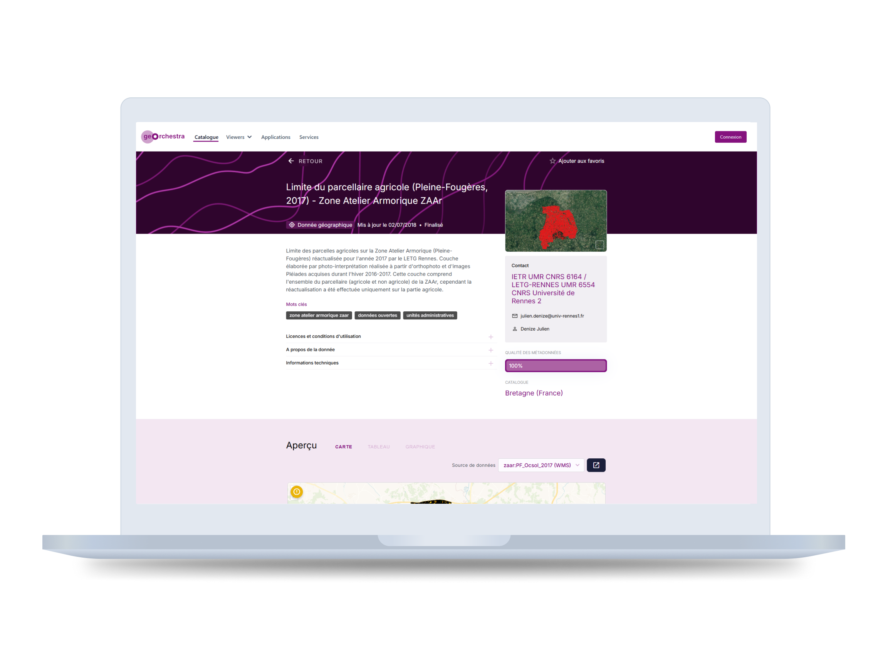
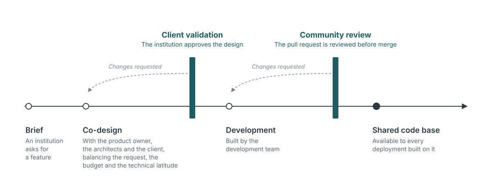
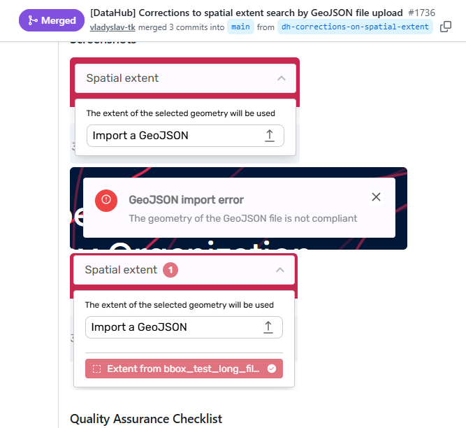
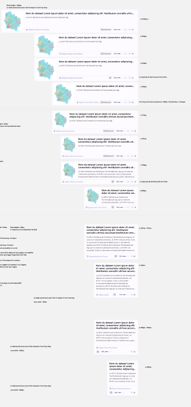
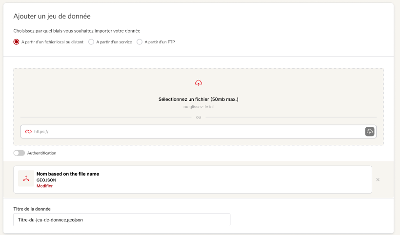
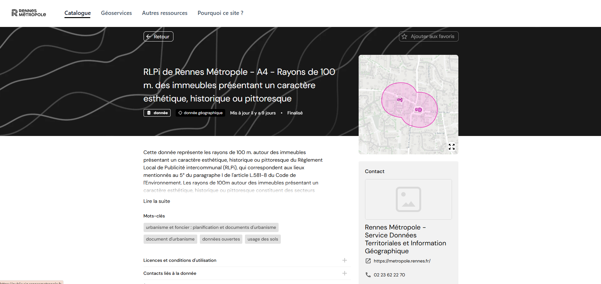
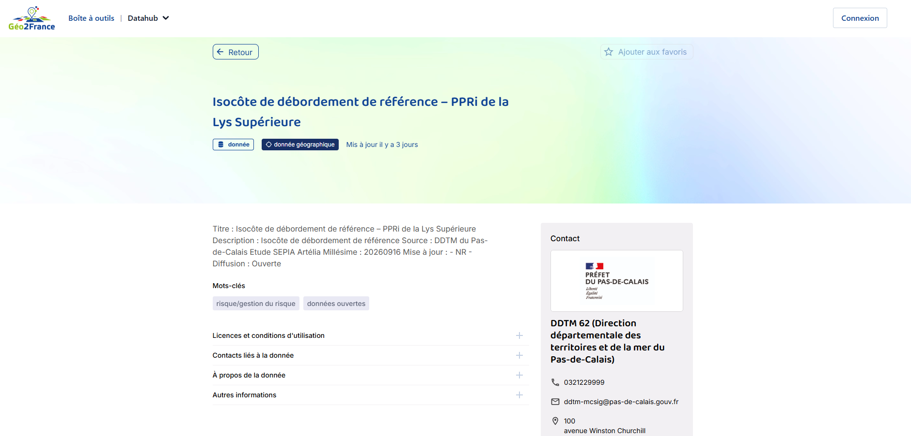
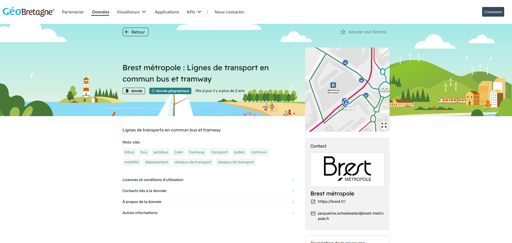
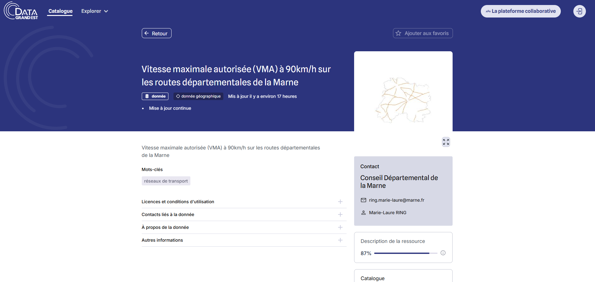

geOrchestra
Designing open-source data infrastructure for public institutions
Lead designer at Camptocamp on geOrchestra, the open-source spatial data infrastructure behind the data portals of IGN and several French regions. Features are commissioned by institutions, worked out with product owners and architects, and reviewed by the community before they join the shared code base.

What I want you to take from this project
Three things, if you are deciding whether to talk to me.
I design within the architecture
geOrchestra is technically complex, and its architecture sets what the interface can do. I work with the product owner and the architects from the start, and each proposal balances what the client asks for, what the budget holds and what the architecture allows.
I open expert tools to non-experts
The same catalogue serves a data engineer publishing a dataset and a policy officer looking for a basemap. Each of them gets a path that fits.
I work inside collective governance
Contributions to the shared code base are reviewed by the community before merge. I write my proposals for the client and for the reviewers.
Project context
- Role
- Lead designer at Camptocamp. UX, information architecture, UI design, design system, RGAA accessibility, and design contributions to the open-source project.
- Team
- A product owner and a project manager almost fully dedicated to geOrchestra, and a development team of four to five people that rotates between projects.
- Timeline
- 2022 → ongoing. A long-running engagement across several institutional clients.
- Tools
- Figma · Figma Variables · Component libraries · Tailwind colour scales · RGAA audit framework · Community contribution workflow on GitHub
- Ecosystem
- geOrchestra (spatial data infrastructure) · GeoNetwork (metadata catalogue) · DataHub (public data portal)
- Clients
- IGN (French national institute of geographic and forest information) · Région Hauts-de-France · Région Grand Est · Ville de Lille
- Current status
- DataHub in production at IGN and several French regional territories. V2 of the ingestion tool in progress.
The problem
Geospatial infrastructure has been built by and for specialists: GIS analysts, data engineers, cartographers. The data is there and the tools are powerful. A policy officer at a regional council or a researcher at a public agency still struggles to reach it, and the interface is where they get stuck.
Much of that data is published under an obligation. The INSPIRE directive requires public authorities to make the spatial data covering their territory accessible, and geOrchestra exists in part to meet it. The same interface serves a data engineer publishing a new dataset and a communications officer looking for a basemap for a public report, and the brief covers both of them.

Constraints
The main guide on this project is co-design with the product owners, the architects and the clients. The platform is technically complex, which frames what the interface can offer, and every proposal is a balance between the client's request, the budget and the technical latitude available.
- Several levels of access. Publication is mandatory, and what a visitor can see varies by dataset. Private data is listed in the catalogue without its detail. Some datasets are too complex to be read as they are, and the site shows a preview of them.
- Desktop first. The DataHub can be browsed on mobile, but desktop is the priority, and content is never cut to fit a smaller screen.
- RGAA accessibility. Institutional clients such as IGN are bound by the RGAA, the French public-sector accessibility standard. It applies from the first wireframe.
- Community review. Contributions to the shared code base are reviewed by the geOrchestra community before merge. Camptocamp is the project's main contributor, and some of its people co-created the platform. A few institutions run instances on their own, but deploying geOrchestra takes close involvement in its development, so in practice deployments go through the community.
- Two audiences. GIS specialists managing metadata and communications staff looking for data to download use the same DataHub. The information architecture gives each a direct route.

Design decisions
Each decision had to satisfy a client, fit the budget and stay within what the architecture allows. Each one has a cost I accepted.
Every feature ships as a reusable component
Institutional briefs always named a feature: add mobile navigation, redesign the ingestion form, improve search results. I delivered each one as a documented component, built on Figma Variables and a token system, so the next project could start from it.
Cost: each feature takes longer to specify, because it has to be described for contexts beyond the one that funded it.
The ingestion tool follows the publisher's questions
Publishing data to a spatial infrastructure involves metadata schemas, coordinate systems and publication workflows. The existing tool laid all of it out in a form that mirrored the server. The redesign follows the three questions a publisher actually has: what do I have, what do I want to publish, who can see it. Technical depth sits behind progressive disclosure, one step away for the people who need it.
Cost: the range of ingestion cases is vast, so the V0 covered a limited set of them to hold deadlines and budget. The V2 in progress covers almost all of them. The client who funds a feature pays for something every deployment will use, and bets that another territory will fund the next step.
Each institution themes the interface with its own colours
The DataHub ships with a vanilla theme that a client can use as it is or customise. Custom colours feed the platform's palette: we start from Tailwind's shade scales and index them on the client's choices, which produces a colour library fitted to that deployment.
Cost: an area of uncertainty we accept and plan for. Depending on the colours a client picks, a deployment can turn out hard to read.



Process: from client brief to community contribution
Most projects follow the same path. A public institution (IGN, Hauts-de-France, Grand Est) asks for a specific improvement: a feature, for a group of users, within a budget. I work it out with the product owner and the architects, then with the client, through wireframes and iterations, before handoff to the development team.
Work meant for the shared code base then goes to community review, where it can be changed or turned down. Some deployments move further from that base: Lille, for instance, runs a customised platform built on geOrchestra.
Outcome and reflections
The DataHub is in production at IGN and several French regional territories, and the V2 of the ingestion tool is under way. The design system coordinates mockup production across the projects that feed geOrchestra.
What this project sharpened in my practiceOn a product this technical, the architecture sets the design space. Working with the product owner and the architects from the first sketch keeps proposals within what can be built and paid for.
A design system is also a way to learn a product. Documenting each component made me work out what it had to handle, and it still sharpens my understanding with every new addition to the platform.
What I would do differentlyStart with a full audit of what had already been designed, and how. I took the project over from a freelance designer whose mission at Camptocamp ended as I joined, and a platform of this size takes time to absorb. Getting to grips with it took me more than a year, with some detours along the way. An audit at the start would have mapped the design debt that builds up in any transition, and made reducing it the first priority.


